work1 は以下の Hashicorp のサンプルでリソースグループと仮想ネットワークを作成します。
Docs overview | hashicorp/azurerm | Terraform | Terraform Registry
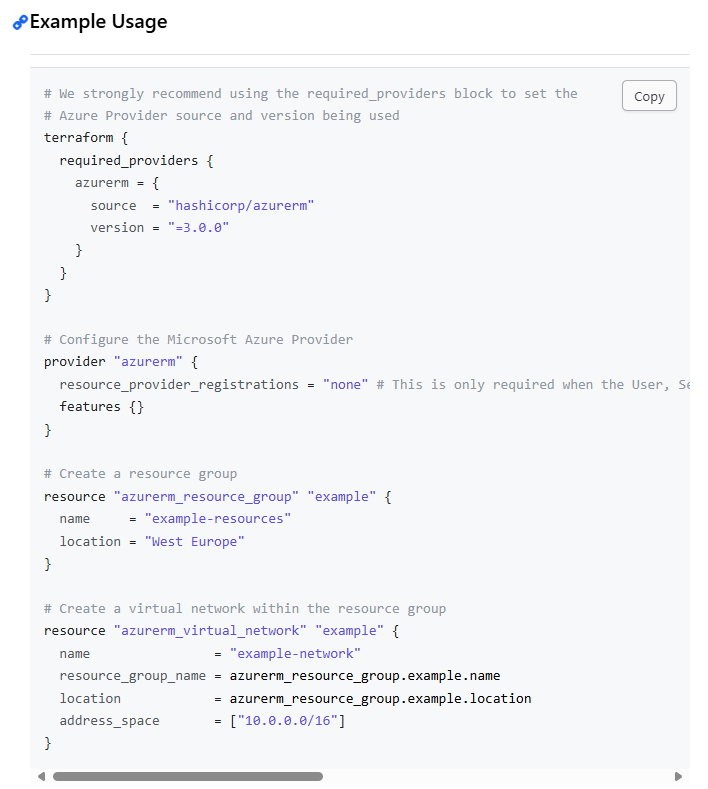
ルートのフォルダ・ファイル構成
terraform {
required_providers {
azurerm = {
source = "hashicorp/azurerm"
version = "=4.4.0"
}
}
}
CSP の設定を記述する。
provider "azurerm" {
subscription_id = "xxxxxxxx-xxxx-xxxx-xxxx-xxxxxxxxxxxxx"
# This is only required when the User, Service Principal,
or Identity running Terraform lacks the permissions to register Azure Resource Providers.
resource_provider_registrations = "none"
features {}
}
version 4.0 より、サブスクリプションの指定が必須となった。以下のように環境変数に設定しておくことも可能。
Azure Resource Manager: 4.0 Upgrade Guide | Guides | hashicorp/azurerm | Terraform | Terraform Registry
# Bash etc.
export ARM_SUBSCRIPTION_ID=00000000-xxxx-xxxx-xxxx-xxxxxxxxxxxx
# PowerShell
[System.Environment]::SetEnvironmentVariable('ARM_SUBSCRIPTION_ID', '00000000-xxxx-xxxx-xxxx-xxxxxxxxxxxx', [System.EnvironmentVariableTarget]::User)
リソースプロバイダーを登録するか指定する。
Azure Resource Manager: 4.0 Upgrade Guide | Guides | hashicorp/azurerm | Terraform | Terraform Registry
# none はリソースプロバイダーを自動的に登録しない設定。
resource_provider_registrations = "none"
# サブスクリプションに必要と見なされる RP の最小セット。
provider "azurerm" {
resource_provider_registrations = "core"
}
# サブスクリプションの RP に加えて、特定の RP のセットを登録する。
provider "azurerm" {
resource_provider_registrations = "core"
resource_providers_to_register = [
"Microsoft.ContainerService",
"Microsoft.KeyVault",
]
}
# サブスクリプションで定義された RP のカスタムセットのみを登録する。
provider "azurerm" {
resource_provider_registrations = "none"
resource_providers_to_register = [
"Microsoft.ApiManagement",
"Microsoft.Compute",
"Microsoft.KeyVault",
"Microsoft.Network",
"Microsoft.Storage",
]
}
location でリージョンを指定する。Region Name または AZ CLI name で指定可能。Short notationは不可。
terraform-azurerm-regions/REGIONS.md at master · claranet/terraform-azurerm-regions · GitHub
# Create a resource group
resource "azurerm_resource_group" "example" {
name = "rg-terraform-work1"
location = "West Europe"
}
# Create a virtual network within the resource group
resource "azurerm_virtual_network" "example" {
name = "terraform-work1"
resource_group_name = azurerm_resource_group.example.name
location = azurerm_resource_group.example.location
address_space = ["10.0.0.0/16"]
}
「resource 規定リソース名 変数名」でリソースを指定し、{} 内でプロパティを指定する。
下記ページの左部メニューから必要なリソースを参照し resource を記載する。
Docs overview | hashicorp/azurerm | Terraform | Terraform Registry
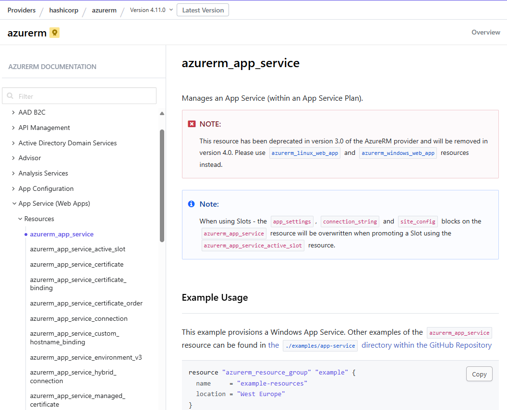
]VS Code ならスニペットあり。「res」まで打って TAB でリソース選択ダイアログが表示される。
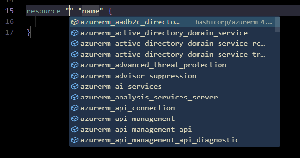
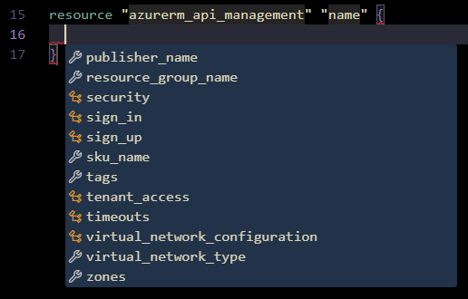
terraform-azurerm-regions/REGIONS.md at master · claranet/terraform-azurerm-regions · GitHub
| Region name | AZ CLI name | Short notation | Internal terraform notation | Paired region | Suggested data location |
|---|---|---|---|---|---|
| Asia | asia | asia | asia | N/A | Asia Pacific |
| East Asia | eastasia | asea | asia-east | asia-south-east | Asia Pacific |
| Asia Pacific | asiapacific | apac | asia-pa | N/A | Asia Pacific |
| Southeast Asia | southeastasia | asse | asia-south-east | asia-east | Asia Pacific |
| Australia | australia | aus | aus | N/A | Australia |
| Australia Central | australiacentral | auc | aus-central | aus-central-2 | Australia |
| Australia Central 2 | australiacentral2 | auc2 | aus-central-2 | aus-central | Australia |
| Australia East | australiaeast | aue | aus-east | aus-south-east | Australia |
| Australia Southeast | australiasoutheast | ause | aus-south-east | aus-east | Australia |
| Brazil | brazil | bra | bra | N/A | Brazil |
| Brazil South | brazilsouth | brs | bra-south | us-south-central | Brazil |
| Brazil Southeast | brazilsoutheast | brse | bra-south-east | bra-south | Brazil |
| Canada | canada | can | can | N/A | Canada |
| Canada Central | canadacentral | cac | can-central | can-east | Canada |
| Canada East | canadaeast | cae | can-east | can-central | Canada |
| China East | chinaeast | cne | cn-east | cn-north | Asia Pacific |
| China East 2 | chinaeast2 | cne2 | cn-east-2 | cn-north-2 | Asia Pacific |
| China East 3 | chinaeast3 | cne3 | cn-east-3 | cn-north-3 | Asia Pacific |
| China North | chinanorth | cnn | cn-north | cn-east | Asia Pacific |
| China North 2 | chinanorth2 | cnn2 | cn-north-2 | cn-east-2 | Asia Pacific |
| China North 3 | chinanorth3 | cnn3 | cn-north-3 | cn-east-3 | Asia Pacific |
| Europe | europe | eu | eu | N/A | Europe |
| North Europe | northeurope | eun | eu-north | eu-west | Europe |
| West Europe | westeurope | euw | eu-west | eu-north | Europe |
| France Central | francecentral | frc | fr-central | fr-south | France |
| France South | francesouth | frs | fr-south | fr-central | France |
| Germany Central | germanycentral | gce | ger-central | N/A | Germany |
| Germany North | germanynorth | gno | ger-north | ger-west-central | Germany |
| Germany Northeast | germanynortheast | gne | ger-north-east | N/A | Germany |
| Germany West Central | germanywestcentral | gwc | ger-west-central | ger-north | Germany |
| Global | global | glob | global | N/A | N/A |
| India | india | ind | ind | N/A | India |
| Central India | centralindia | inc | ind-central | ind-south | India |
| South India | southindia | ins | ind-south | ind-central | India |
| West India | westindia | inw | ind-west | ind-south | India |
| Israel Central | israelcentral | ilc | isr-central | N/A | Asia Pacific |
| Italy North | italynorth | itn | ita-north | N/A | Europe |
| Japan | japan | jap | jap | N/A | Japan |
| Japan East | japaneast | jpe | jap-east | jap-west | Japan |
| Japan West | japanwest | jpw | jap-west | jap-east | Japan |
| Korea | korea | kor | kor | N/A | Korea |
| Korea Central | koreacentral | krc | kor-central | kor-south | Korea |
| Korea South | koreasouth | krs | kor-south | kor-central | Korea |
| Norway | norway | nor | nor | N/A | Norway |
| Norway East | norwayeast | noe | norw-east | norw-west | Norway |
| Norway West | norwaywest | now | norw-west | norw-east | Norway |
| Poland Central | polandcentral | polc | pol-central | N/A | Europe |
| Qatar Central | qatarcentral | qatc | qat-central | N/A | UAE |
| South Africa North | southafricanorth | san | saf-north | saf-west | Africa |
| South Africa West | southafricawest | saw | saf-west | saf-north | Africa |
| Singapore | singapore | sgp | sgp | N/A | Asia Pacific |
| Sweden | sweden | swe | swe | N/A | Europe |
| Sweden Central | swedencentral | swec | swe-central | swe-south | Europe |
| Sweden South | swedensouth | swes | swe-south | swe-central | Europe |
| Switzerland North | switzerlandnorth | swn | swz-north | swz-west | Switzerland |
| Switzerland West | switzerlandwest | sww | swz-west | swz-north | Switzerland |
| UAE Central | uaecentral | uaec | uae-central | uae-north | UAE |
| UAE North | uaenorth | uaen | uae-north | uae-central | UAE |
| United Kingdom | uk | uk | uk | N/A | UK |
| UK South | uksouth | uks | uk-south | uk-west | UAE |
| UK West | ukwest | ukw | uk-west | uk-south | UK |
| United States | unitedstates | us | us | N/A | United States |
| Central US | centralus | usc | us-central | us-east-2 | United States |
| East US | eastus | use | us-east | us-west | United States |
| East US 2 | eastus2 | use2 | us-east-2 | us-central | United States |
| North Central US | northcentralus | usnc | us-north-central | us-south-central | United States |
| South Central US | southcentralus | ussc | us-south-central | us-north-central | United States |
| West US | westus | usw | us-west | us-east | United States |
| West US 2 | westus2 | usw2 | us-west-2 | us-west-central | United States |
| West US 3 | westus3 | usw3 | us-west-3 | us-east | United States |
| West Central US | westcentralus | uswc | us-west-central | us-west-2 | United States |
フォルダを右クリック ⇒ ターミナルで開く ⇒ PowerShell を起動する。
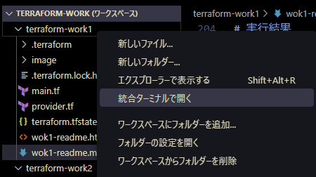
az account show でテナント・サブスクリプションを確認する。
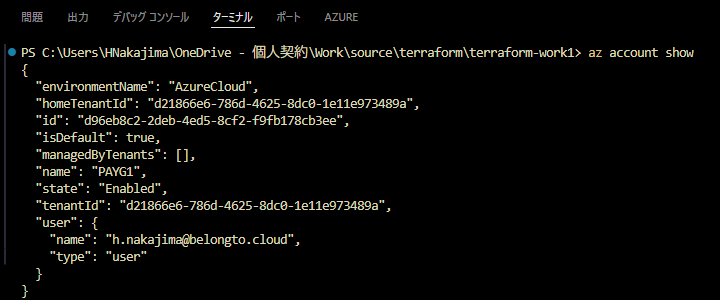
terraform init で初期化。作業ディレクトリにプロバイダー (azurerm/225MB) がダウンロードされる。
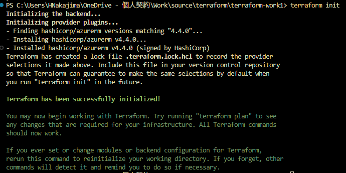
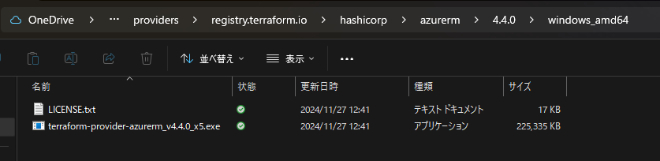
PS C:\Users\HNakajima\OneDrive - 個人契約\Work\source\terraform\terraform-work1> terraform init
Initializing the backend...
Initializing provider plugins...
- Finding hashicorp/azurerm versions matching "4.4.0"...
- Installing hashicorp/azurerm v4.4.0...
- Installed hashicorp/azurerm v4.4.0 (signed by HashiCorp)
Terraform has created a lock file .terraform.lock.hcl to record the provider
selections it made above. Include this file in your version control repository
so that Terraform can guarantee to make the same selections by default when
you run "terraform init" in the future.
Terraform has been successfully initialized!
You may now begin working with Terraform. Try running "terraform plan" to see
any changes that are required for your infrastructure. All Terraform commands
should now work.
If you ever set or change modules or backend configuration for Terraform,
rerun this command to reinitialize your working directory. If you forget, other
commands will detect it and remind you to do so if necessary.
terraform plan で実行内容を確認。⇒ 2 リソース追加される。
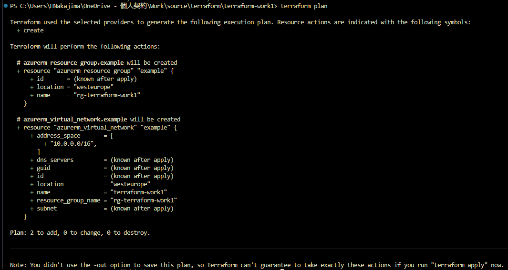
PS C:\Users\HNakajima\OneDrive - 個人契約\Work\source\terraform\terraform-work1> terraform plan
Terraform used the selected providers to generate the following execution plan. Resource actions are indicated with the following symbols:
+ create
Terraform will perform the following actions:
# azurerm_resource_group.example will be created
+ resource "azurerm_resource_group" "example" {
+ id = (known after apply)
+ location = "westeurope"
+ name = "rg-terraform-work1"
}
# azurerm_virtual_network.example will be created
+ resource "azurerm_virtual_network" "example" {
+ address_space = [
+ "10.0.0.0/16",
]
+ dns_servers = (known after apply)
+ guid = (known after apply)
+ id = (known after apply)
+ location = "westeurope"
+ name = "terraform-work1"
+ resource_group_name = "rg-terraform-work1"
+ subnet = (known after apply)
}
Plan: 2 to add, 0 to change, 0 to destroy.
──────────────────────────────────────────────────
Note: You didn't use the -out option to save this plan, so Terraform can't guarantee to take exactly these actions if you run "terraform apply" now.
terraform apply で環境に適用する。
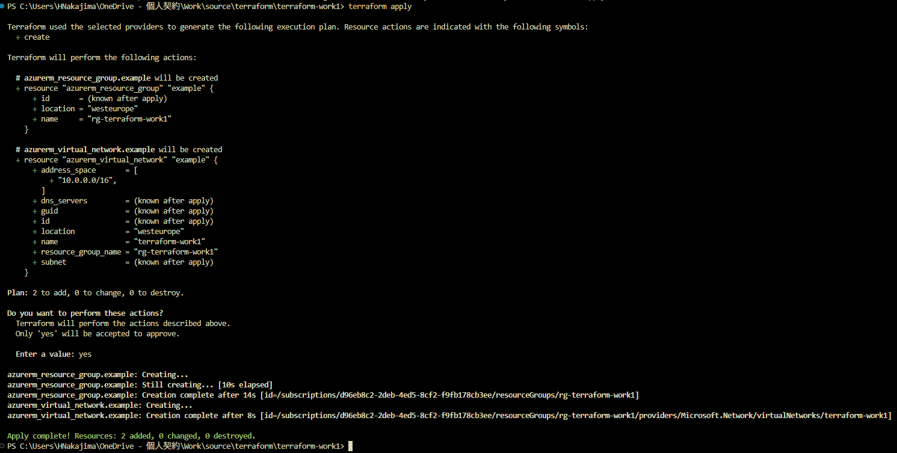
PS C:\Users\HNakajima\OneDrive - 個人契約\Work\source\terraform\terraform-work1> terraform apply
Terraform used the selected providers to generate the following execution plan. Resource actions are indicated with the following symbols:
+ create
Terraform will perform the following actions:
# azurerm_resource_group.example will be created
+ resource "azurerm_resource_group" "example" {
+ id = (known after apply)
+ location = "westeurope"
+ name = "rg-terraform-work1"
}
# azurerm_virtual_network.example will be created
+ resource "azurerm_virtual_network" "example" {
+ address_space = [
+ "10.0.0.0/16",
]
+ dns_servers = (known after apply)
+ guid = (known after apply)
+ id = (known after apply)
+ location = "westeurope"
+ name = "terraform-work1"
+ resource_group_name = "rg-terraform-work1"
+ subnet = (known after apply)
}
Plan: 2 to add, 0 to change, 0 to destroy.
Do you want to perform these actions?
Terraform will perform the actions described above.
Only 'yes' will be accepted to approve.
Enter a value: yes
azurerm_resource_group.example: Creating...
azurerm_resource_group.example: Still creating... [10s elapsed]
azurerm_resource_group.example: Creation complete after 14s [id=/subscriptions/xxxxxxxx-xxxx-xxxx-xxxx-xxxxxxxxxxxx/resourceGroups/rg-terraform-work1]
azurerm_virtual_network.example: Creating...
azurerm_virtual_network.example: Creation complete after 8s [id=/subscriptions/xxxxxxxx-xxxx-xxxx-xxxx-xxxxxxxxxxxx/resourceGroups/rg-terraform-work1/providers/Microsoft.Network/virtualNetworks/terraform-work1]
Apply complete! Resources: 2 added, 0 changed, 0 destroyed.
リソースグループと仮想ネットワークが作成された。
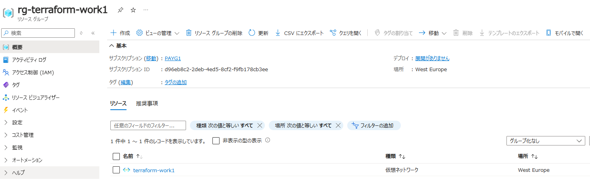
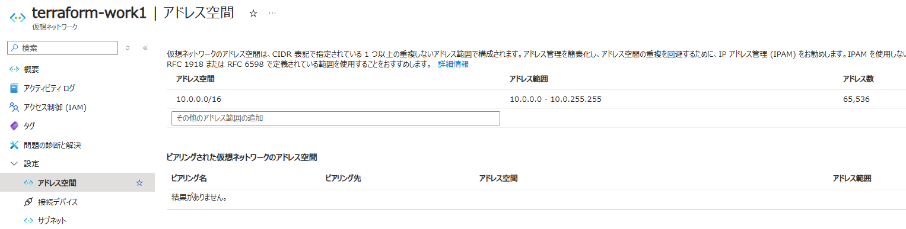
アクティビティログには、サインインした Entra 実行ユーザーのログが残る。
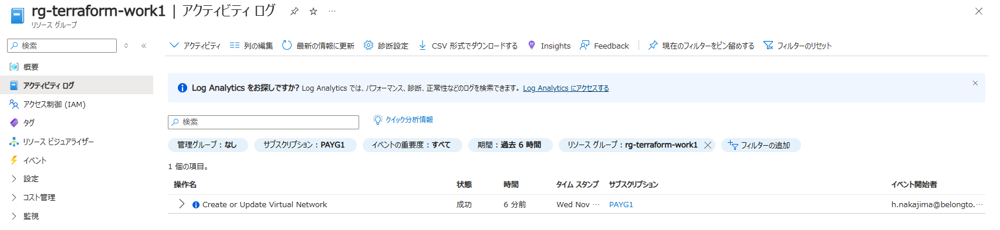
一方、デプロイ履歴には残らない。⇒ Azure ポータルでデプロイした際は履歴が残る。
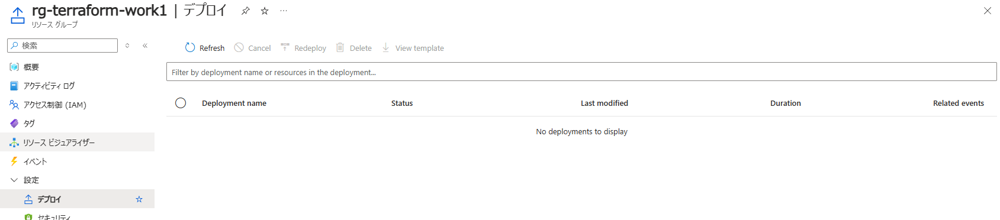